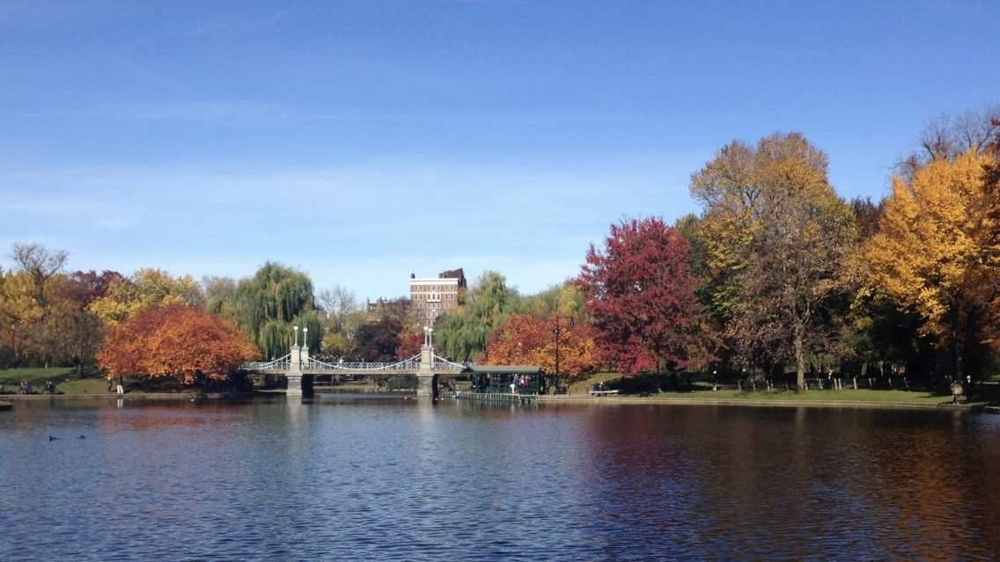
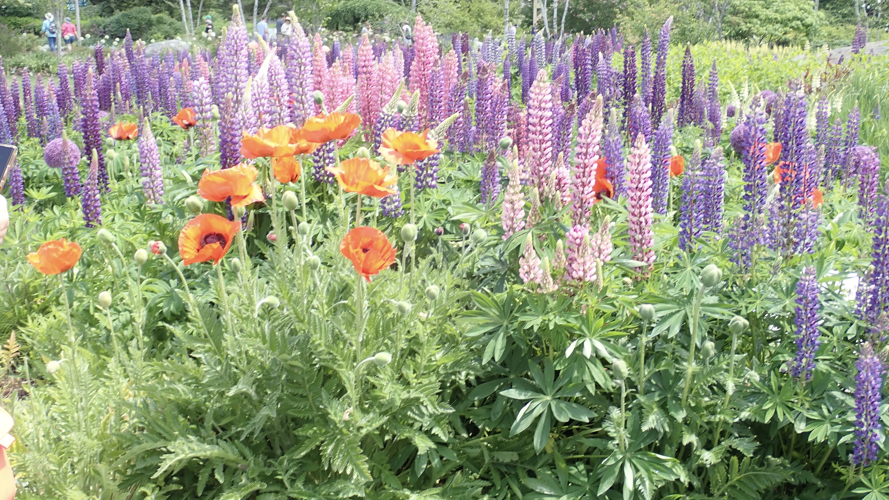
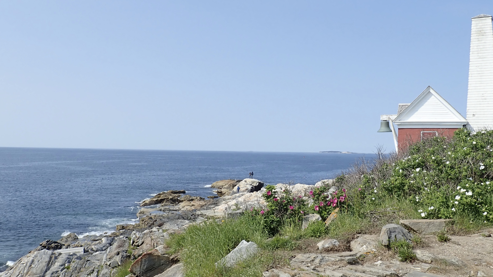
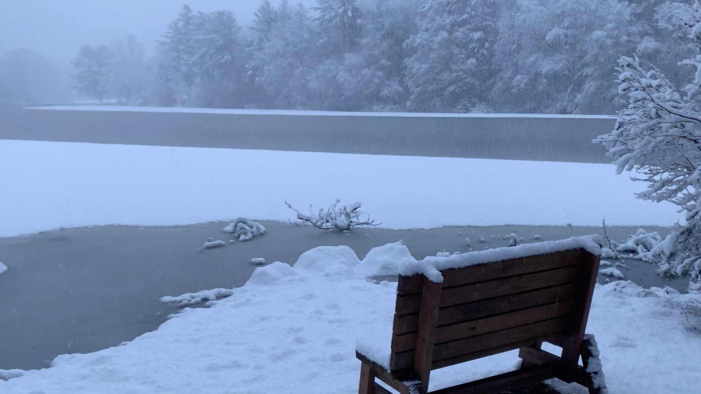
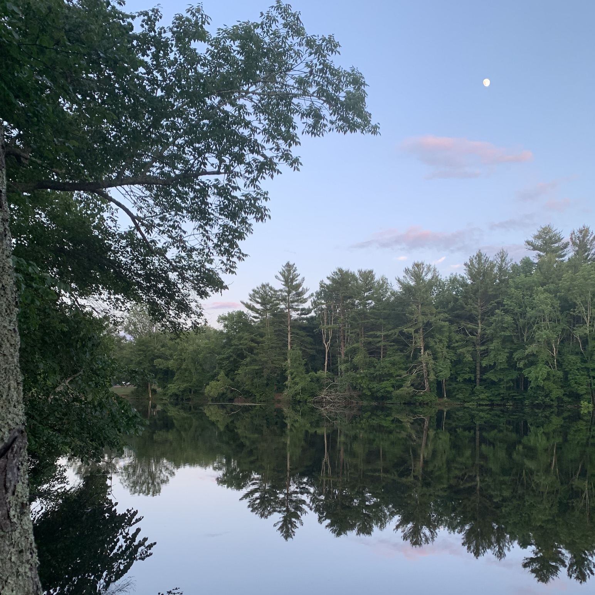
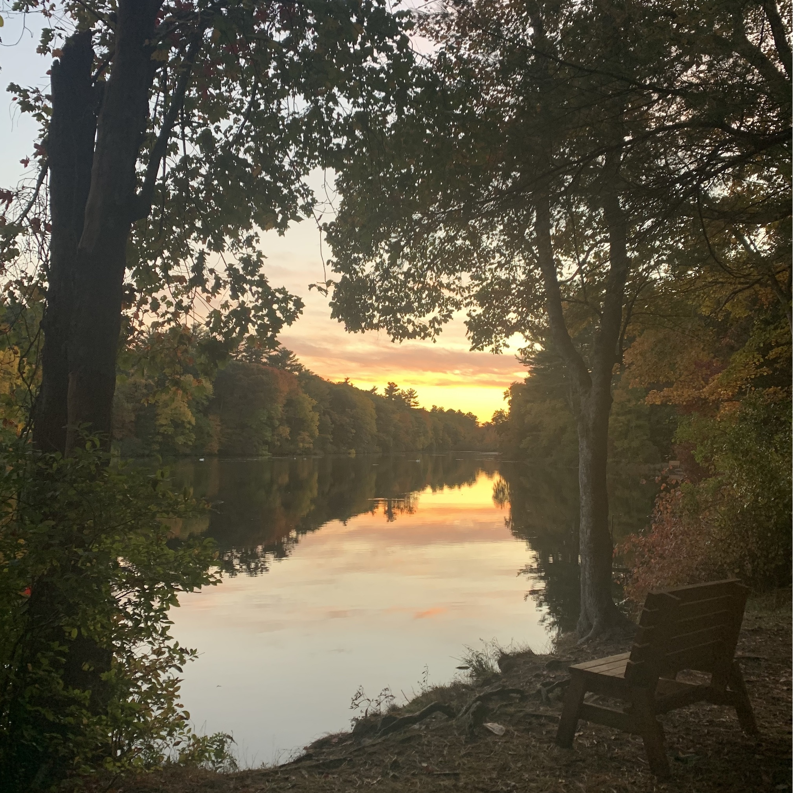
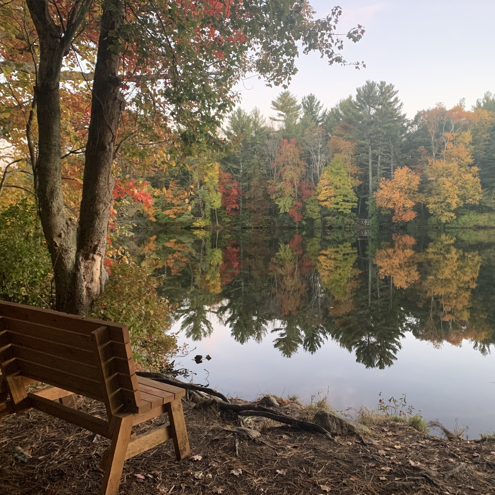
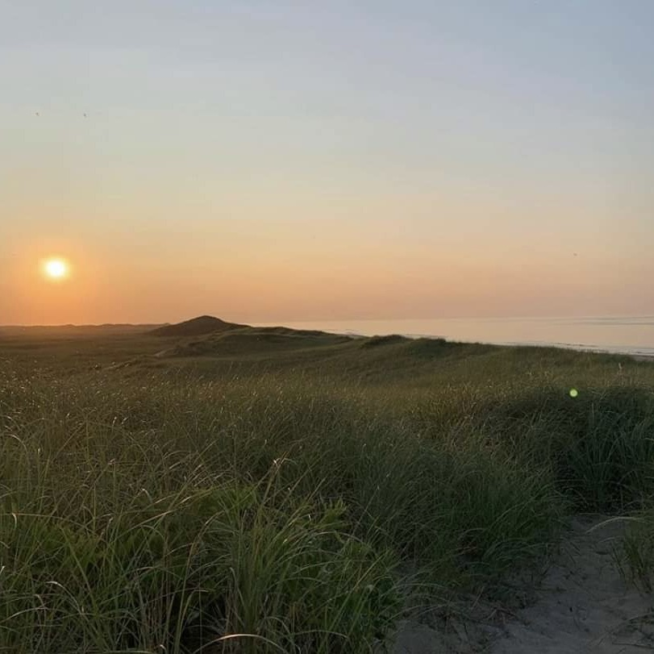
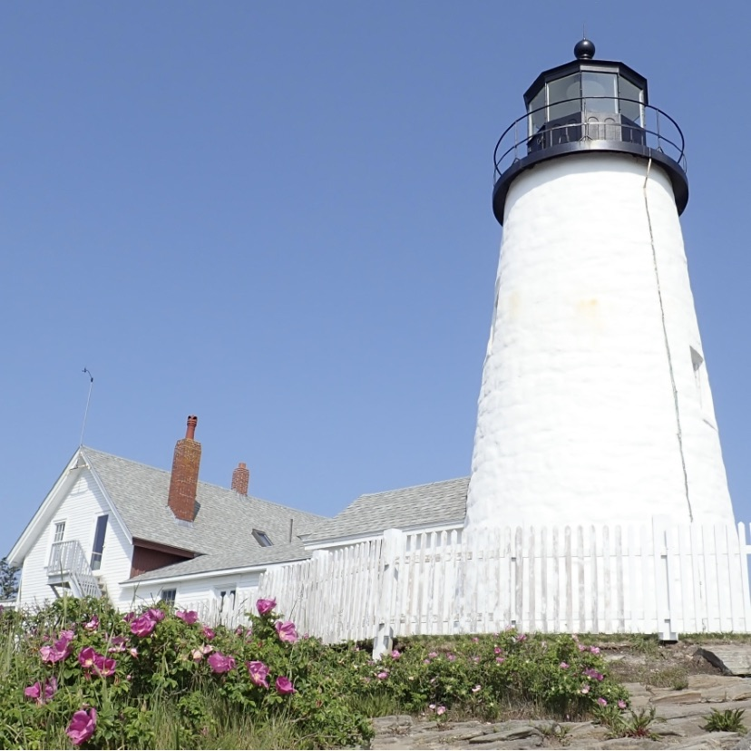
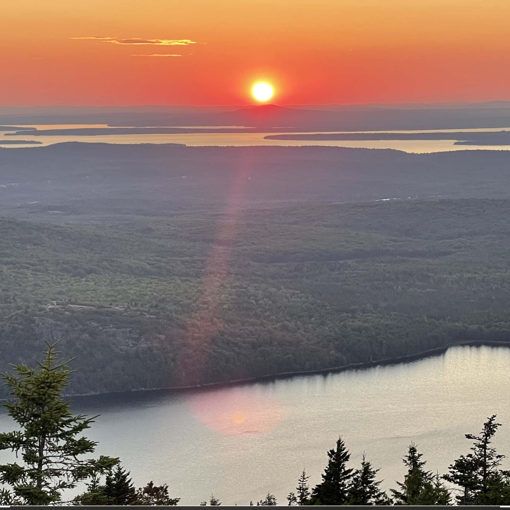

1 / 11

"Live in each season as it passes; breathe the air, drink the drink,
taste the fruit, and resign yourself to the influence of the earth."
— Henry David Thoreau
2 / 11

"The woods are lovely, dark and deep, but I have promises to keep,
and miles to go before I sleep. — Robert Frost
3 / 11

"The earth laughs in flowers." — Ralph Waldo Emerson
4 / 11

"I'm not afraid of storms, for I'm learning how to sail my ship." —
Louisa May Alcott
5 / 11

"There's a certain Slant of light, Winter Afternoons— That
oppresses, like the Heft Of Cathedral Tunes—" - Emily Dickinson
6 / 11

"I believe a leaf of grass is no less than the journey-work of the
stars." — Walt Whitman
7 / 12

"Now I see the secret of making the best person: it is to grow in
the open air and to eat and sleep with the earth." — Walt Whitman
8 / 11

"The creation of a thousand forests is in one acorn." — Ralph Waldo
Emerson
9 / 11

"One must maintain a little bit of summer, even in the middle of
winter." — Henry David Thoreau
10 / 11

"A light exists in spring, not present on the year at any other
period." — Emily Dickinson
11 / 11

"She loved flowers, and children, and the sun, and everything that
was beautiful and gentle." — Louisa May Alcott
❮
❯